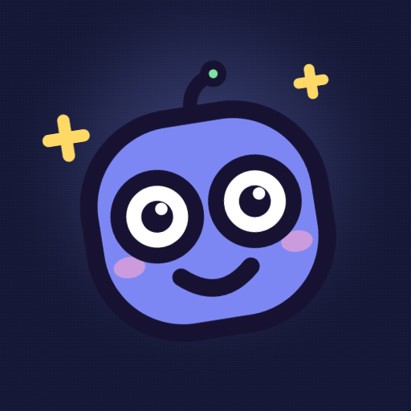

Everyone else wants you
to stop scrolling.
ScrollRank just wants to know your number. It counts the short videos you actually watch across Instagram Reels, YouTube Shorts and TikTok, turns your week into a rank, and puts you on a leaderboard against your friends.
Free. No ads, no trackers, no account needed.
How many Reels do you watch in a day?
Most people guess somewhere between twenty and fifty. The counts that come back from a real counter are usually higher, because the swipes you do not remember are the ones that add up: the two minutes in a queue, the ten minutes in bed, the half hour that was meant to be five.
Screen time tools cannot answer this. They report minutes inside an app, which lumps messages, posts and stories in with the feed, and they cannot separate a Reel from a Story or a Short from an ordinary YouTube video. ScrollRank counts individual short videos, one at a time, in the three apps most of them come from.
Questions
Does ScrollRank block anything?
No. There are no limits, no timers and no lockouts. It is a counter. Some people read their weekly number and go install a blocker, and that is a completely reasonable outcome. Others try to beat it. Either way you stop guessing.
Does it count YouTube Shorts and TikTok, or only Instagram?
All three. Ordinary YouTube videos are not counted, only Shorts. You can switch any platform off in Settings, after which it is never counted, stored or uploaded.
Why does it need the Accessibility permission?
Counting short videos is the app's core feature, and Android provides no narrower API that can do it. The service detects when the Reels, Shorts or TikTok player is on screen and counts a video once it has been there for three seconds. It does not read your messages, posts, passwords or anything you type, it does not record your screen, and it does not act inside any app on your behalf. Which videos you watched, when, and in what order never leaves your phone. See the privacy policy for the full detail.
My count stopped. I have a Xiaomi, Redmi, Poco, Oppo, Realme or Vivo phone.
Those phones close background apps aggressively, which stops the counter while leaving its switch turned on. Open ScrollRank and use the "Fix" banner on the home screen to allow autostart. Recent versions walk you through this during setup on the phones that need it.
Is it free? Are there ads?
Free, with no ads, no analytics SDKs and no third-party trackers. You can start as a guest with no account and no email, and delete your account and everything in it from Settings at any time.